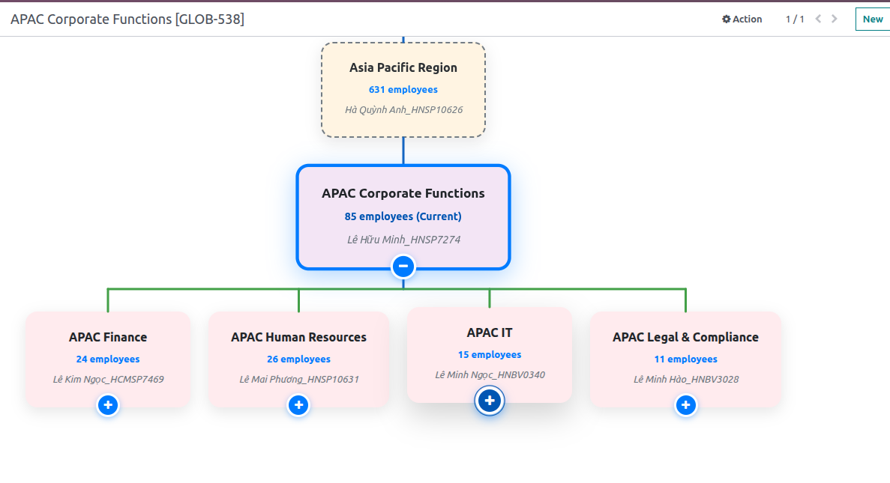
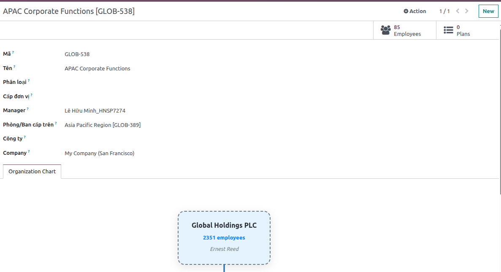

HR Department Organization Chart adds a dedicated Organization Chart tab to every department form in Odoo. It renders the full hierarchy around the department you are looking at: the chain of parent departments above, the current department highlighted in the middle, and the collapsible tree of sub-departments below.

Opening a new branch automatically collapses the branch that was previously open at the same level, so the chart always stays compact and readable. The background colour of each box depends on its depth in the hierarchy.

The module only depends on the standard hr application
of Odoo 16.
From the UI: activate the developer mode, then go to Apps and install HR Department Organization Chart.
From the command line:
odoo -d <your_database> -i hr_department_org_chart --stop-after-init
The chart is registered as an Odoo field widget named
hr_department_org_chart, so you can display it on any
hr.department relation:
field name="child_ids" widget="hr_department_org_chart" readonly="1" nolabel="1"
Author: Tuyen Fung
License: LGPL-3
Price: 22.75 EUR
Supported versions: Odoo 16.0
Source code:
github.com/Thanhtuyen12/widget-odoo